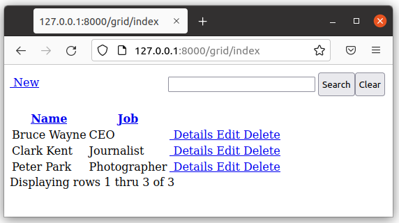
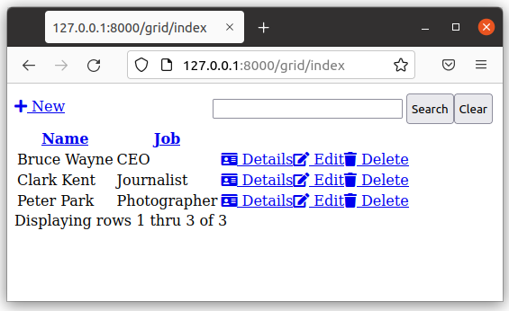
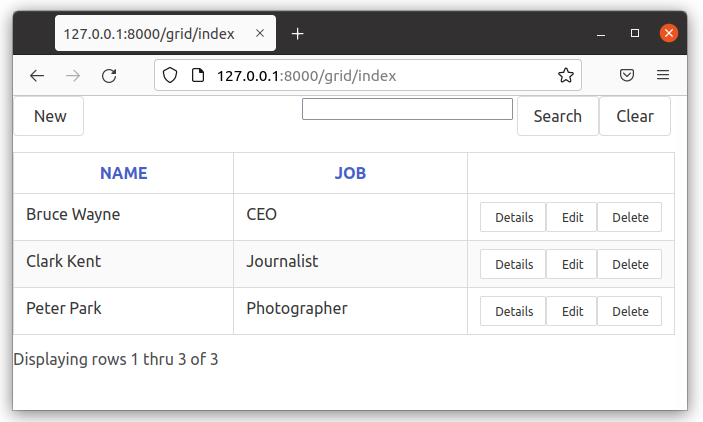

Rede
py4web comes with a Grid object providing grid and CRUD (create, update and delete) capabilities. This allows you to quickly and safely provide an interface to your data. Since it’s also highly customizable, it’s the corner stone of most py4web’s applications.
Key features
CRUD completa com Confirmação de exclusão
Clique cabeças de coluna para classificar - clique novamente para DESC
Controle de paginação
Construído em Search (pode usar search_queries OU search_form)
Botões de ação - com ou sem texto
Pré e Pós Ação (adicionar seus próprios botões para cada linha)
Datas de grid em formato local
Formatação padrão por tipo de utilizador mais substituições
Dica
There is an excellent grid tutorial made by Jim Steil on https://github.com/jpsteil/grid_tutorial. You’re strongly advised to check it for any doubt and for finding many precious examples, hints & tips.
Basic grid example
In this simple example we will make a grid over the superhero table.
Create a new minimal app called grid. Change it with the following content.
# in grid/__init__.py
import os
from py4web import action, Field, DAL
from py4web.utils.grid import *
from py4web.utils.form import *
from yatl.helpers import A
# database definition
DB_FOLDER = os.path.join(os.path.dirname(__file__), 'databases')
if not os.path.isdir(DB_FOLDER):
os.mkdir(DB_FOLDER)
db = DAL('sqlite://storage.sqlite', folder=DB_FOLDER)
db.define_table(
'person',
Field('superhero'),
Field('name'),
Field('job'))
# add example entries in db
if not db(db.person).count():
db.person.insert(superhero='Superman', name='Clark Kent', job='Journalist')
db.person.insert(superhero='Spiderman', name='Peter Park', job='Photographer')
db.person.insert(superhero='Batman', name='Bruce Wayne', job='CEO')
db.commit()
@action('index', method=['POST', 'GET'])
@action('index/<path:path>', method=['POST', 'GET'])
@action.uses('grid.html', db)
def index(path=None):
grid = Grid(path,
formstyle=FormStyleDefault, # FormStyleDefault or FormStyleBulma
grid_class_style=GridClassStyle, # GridClassStyle or GridClassStyleBulma
query=(db.person.id > 0),
orderby=[db.person.name],
search_queries=[['Search by Name', lambda val: db.person.name.contains(val)]])
return dict(grid=grid)
Add a new file templates/grid.html with this basic content:
[[=grid.render()]]
Then restart py4web. If you browse to http://127.0.0.1:8000/grid/index you’ll get this result:
Its layout is quite minimal, but it’s perfectly usable.
The main problem is that by default the no.css stylesheet is used, see here. But we’ve not loaded it! Change the file templates/grid.html with this content:
<!DOCTYPE html>
<html>
<head>
<link rel="stylesheet" href="https://cdnjs.cloudflare.com/ajax/libs/font-awesome/5.14.0/css/all.min.css" />
</head>
<body>
[[=grid.render()]]
<body>
</html>
Then refresh the page.
This is better now, with proper icons for Details, Edit and Delete actions.
We can also think about using the bulma.css, see here. In this case you need to change the grid object on __init__.py to:
formstyle=FormStyleBulma, # FormStyleDefault or FormStyleBulma
grid_class_style=GridClassStyleBulma, #GridClassStyle or GridClassStyleBulma
Notice that in this case you need to import the corresponding python modules in advance (we’ve already done it on line 4 and 5 above). Instead if you use the default no.css style you don’t need to manually import its style modules (and you even don’t need the formstyle and grid_class_style parameters).
You also have to change the file templates/grid.html with this content:
<!DOCTYPE html>
<html>
<head>
<link rel="stylesheet" href="https://cdnjs.cloudflare.com/ajax/libs/bulma/0.9.3/css/bulma.min.css">
</head>
<body>
[[=grid.render()]]
<body>
</html>
Then refresh the page.
This is much better, isn’t it?
Nota
These are just minimal examples for showing how grid works internally.
Normally you should start from a copy of the standard _scaffold app, with all
the Session and Authentication stuff already defined. Also, you should
follow the standard rules for code, like placing the db definition inside
models.py and so on.
Using standards will make your code simpler, safer and more maintainable.
Also, do not use grid objects directly on the root action of an app, because it does not add the “index” route. So, in this example if you browse to http://127.0.0.1:8000/grid the main page is displayed fine but any contained action will lead to a non existent page.
In the Advanced topics and examples chapter you can find more examples, including a master/detail grid example written with htmx. And don’t forget Jim Steil’s detailed tutorial on https://github.com/jpsteil/grid_tutorial.
The Grid object
class Grid:
def __init__(
self,
path,
query,
search_form=None,
search_queries=None,
columns=None,
field_id=None,
show_id=False,
orderby=None,
left=None,
headings=None,
create=True,
details=True,
editable=True,
deletable=True,
validation=None,
pre_action_buttons=None,
post_action_buttons=None,
auto_process=True,
rows_per_page=15,
include_action_button_text=True,
search_button_text="Filter",
formstyle=FormStyleDefault,
grid_class_style=GridClassStyle,
T=lambda text: text,
):
caminho: a rota do pedido
query: consulta pydal a ser processado
search_form: py4web FORM to be included as the search form. If search_form is passed in then the developer is responsible for applying the filter to the query passed in. This differs from search_queries
search_queries: list of query lists to use to build the search form. Ignored if search_form is used
columns: list of fields or columns to display on the list page, see the Custom columns paragraph later. If blank, the table will use all readable fields of the searched table
show_id: mostrar o campo ID de registo na página de lista - default = false
orderby: Campo orderby pydal ou lista de campos
esquerda: se juntando outras tabelas, especifique a expressão esquerda pydal aqui
títulos: lista de títulos a ser utilizado para página da lista - se não for fornecido o uso do rótulo do campo
criar: URL para redirecionar para a criação de registros - definido como verdadeiro para gerar automaticamente o URL - definido como falso para não exibir o botão
details: URL to redirect to for displaying records - set to True to automatically generate the URL - set to False to not display the button (*)
editable: URL to redirect to for editing records - set to True to automatically generate the URL - set to False to not display the button (*)
deletable: URL to redirect to for deleting records - set to True to automatically generate the URL - set to False to not display the button (*)
validation: optional validation function to pass to create and edit forms
pre_action_buttons: lista de instâncias action_button para incluir antes de os botões de ação padrão
post_action_buttons: lista de instâncias action_button para incluir após os botões de ação padrão
auto_process: Boolean - se ou não a grid deve ser processado imediatamente. Se False, desenvolvedor deve chamar grid.process () uma vez todos os parâmetros são configurados
rows_per_page: número de linhas a serem exibidos por página. padrão 15
include_action_button_text: boolean dizendo a grid se deseja ou não de texto em botões de ação dentro de sua grid
search_button_text: texto a ser exibido no botão enviar em seu formulário de pesquisa
formstyle: py4web Form formstyle usado para estilo seu formulário ao construir automaticamente formulários CRUD
grid_class_style: GridClassStyle object used to override defaults for styling your rendered grid. Allows you to specify classes or styles to apply at certain points in the grid
T: optional pluralize object
(*) The parameters details, editable and deletable can also take a callable that will
be passed the current row of the grid. This is useful because you can then turn a button on or off
depending on the values in the row. In other words,
instead of providing a simple Boolean value you can use an expression like:
deletable=lambda row: False if row.job=="CEO" else True,
See also Using callable parameters later on.
Searching and filtering
There are two ways to build a search form:
Fornecer uma lista search_queries
Construa a sua própria forma de pesquisa personalizada
Se você fornecer uma lista search_queries à grid, ele irá:
build a search form. If more than one search query in the list, it will also generate a dropdown to select which search field to search against
recolher valores de filtro e filtrar a grid
No entanto, se isso não lhe dá flexibilidade suficiente, você pode fornecer o seu próprio formulário de busca e lidar com toda a filtragem (construção das consultas) por si mesmo.
CRUD settings
The grid provides CRUD (create, read, update and delete) capabilities utilizing py4web Form. You can turn off CRUD features by setting create/details/editable/deletable during grid instantiation.
Além disso, você pode fornecer uma URL separada para a criação / detalhes / editáveis / parâmetros elimináveis para ignorar as páginas CRUD gerados automaticamente e lidar com as páginas de detalhes do mesmo.
Custom columns
If the grid does not involve a join but displays results from a single table you can specify a list of columns. Columns are highly customizable.
from py4web.utils.grid import Column
from yatl.helpers import A
columns = [
db.person.id,
db.person.superhero,
db.person.name,
db.person.job,
Column("Web Site", lambda row: f"https://{row.superhero}.com"),
Column("Go To", lambda row: A("link", _href=f"https://{row.superhero}.com"))
]
grid = Grid(... columns=columns ...)
Notice in this example the first columns are regular fields,
The fifth column has a header «Web Site» and consists of URL strings generated from the rows.
The last column has a header «Go To» and generates actual clickable links using the A helper.
This is the result:
Notice that we’ve also used the deletable parameter in order to disable and hide it for
Batman only, as explained before.
Aviso
Do not define columns outside of the controller methods that use them, otherwise the structure of the table will change every time the user press the refresh button of the browser!
The reason is that each time the grid displays, it modifies the “columns” variable (in the grid) by adding the action buttons to it. So, if columns are defined outside of the controller method, it just keeps adding the actions column.
Usando templates
Use o seguinte para tornar a sua grid ou formas CRUD em seus templates.
Mostrar a grid ou um formulário CRUD
[[=grid.render()]]
You can customize the CRUD form layout like a normal form (see Custom forms). So you can use the following structure:
[[form = grid.render() ]]
[[form.custom["begin"] ]]
...
[[form.custom["submit"]
[[form.custom["end"]
But notice that when handling custom form layouts you need to know if you are displaying the grid or a form. Use the following to decide:
[[if request.query.get('action') in ('details', 'edit'):]]
# Display the custom form
[[form = grid.render() ]]
[[form.custom["begin"] ]]
...
[[form.custom["submit"]
[[form.custom["end"]
[[else:]]
[[grid.render() ]]
[[pass]]
Customizing style
Você pode fornecer suas próprias formstyle ou grid classes e estilo ao grid.
formstyle é o mesmo que um formstyle Forma, usadas para as formas estilo CRUD.
grid_class_style é uma classe que fornece as classes e / ou estilos utilizados para certas porções da grelha.
The default GridClassStyle - based on no.css, primarily uses styles to
modify the layout of the grid. We’ve already seen that it’s possible
to use other class_style, in particular GridClassStyleBulma.
You can even build your own class_style to be used with the css framework of your choice. Unfortunately, one based on bootstrap is still missing.
Os campos de referência
Ao exibir campos em uma tabela PyDAL, às vezes você deseja exibir um campo mais descritivo do que um valor de chave estrangeira. Há um par de maneiras de lidar com isso com a grid py4web.
filter_out on PyDAL field definition - here is an example of a foreign
key field
Field('company', 'reference company',
requires=IS_NULL_OR(IS_IN_DB(db, 'company.id',
'%(name)s',
zero='..')),
filter_out=lambda x: x.name if x else ''),
Isto irá exibir o nome da empresa na grid em vez do ID empresa
A queda de usar este método é que classificação e filtragem são baseados no campo da empresa na tabela de empregado e não o nome da empresa
left join and specify fields from joined table - specified on the left
parameter of Grid instantiation
db.company.on(db.employee.company == db.company.id)
You can specify a standard PyDAL left join, including a list of joins to consider. Now the company name field can be included in your fields list can be clicked on and sorted.
Also you can specify a query such as:
queries.append((db.employee.last_name.contains(search_text)) | (db.employee.first_name.contains(search_text)) | db.company.name.contains(search_text))
Este método permite classificar e filtrar, mas não permite que você para combinar campos a serem exibidos em conjunto, como o método filter_out faria
Você precisa determinar qual método é melhor para o seu caso de uso compreender as grids diferentes no mesmo aplicativo pode precisar de se comportar de forma diferente.
Grids with checkboxes
While the grid, per se, does not support checkboxes, you can use custom columns to add one or more columns of checkboxes.
You can also add the helpers logic (the grid uses helpers to generate HTML) to wrap it in a <form> and add one
or more submit buttons. You can then add logic to process the selected rows when the button is selected. For example:
column = Column("select", lambda row: INPUT(_type="checkbox",_name="selected_id",_value=row.id))
@action("manage")
@action("manage/<path:path>")
@action.uses("manage.html", db)
def manage(path=None):
grid = Grid(path, db.thing, columns=[column, db.thing.name])
# if we are displaying a "select" grid page (not a form)
if not grid.form:
grid = grid.render()
# if checkboxes selection was submitted
if request.method == "POST":
# do something with the selected ids
print("you selected", request.POST.get("selected_id"))
# inject a ``<form>`` and a ``submit`` button
grid.children[1:] = [FORM(
*grid.children[1:],
DIV(INPUT(_type="submit",_value="do it!")),
_method="POST",
_action=request.url)]
return locals()
Notice in the above example request.POST.get("selected_id") can be a single ID (if one selected) or a list of IDs (if more than one
is selected).